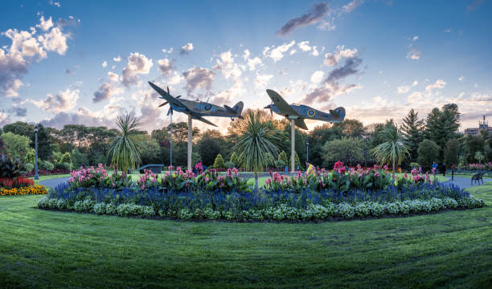
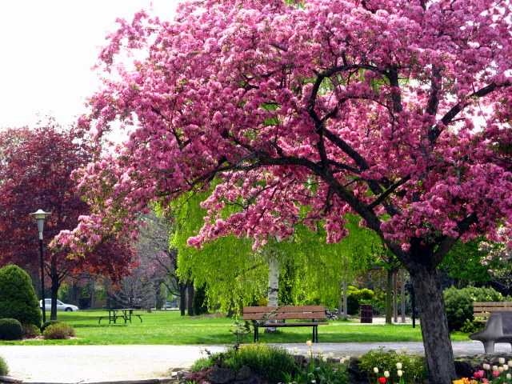

Jackson Park
Address: 125 Tecumseh Rd. E., Windsor, ON
sourced from Getty Images
sourced from Wikimedia Commons
Jackson Park is one of Windsor's most prestigious and historically significant parks. It is renowned for its stunning formal gardens, including the Queen Elizabeth II Sunken Garden and a breathtaking rose garden featuring over 12,000 rose bushes. The park serves as a tribute to Canada's veterans, with prominent memorials such as a World War II Lancaster Bomber and a Spitfire replica, making it a place of both beauty and remembrance. Its vast network of paths is perfect for walking and cycling, leading visitors through meticulously landscaped grounds. In the winter, the park transforms into a magical wonderland with the "Bright Lights Windsor" festival, attracting thousands with its spectacular holiday light displays. Jackson Park is a hub of community activity, hosting events and celebrations year-round, and stands as a testament to horticultural excellence and civic pride.